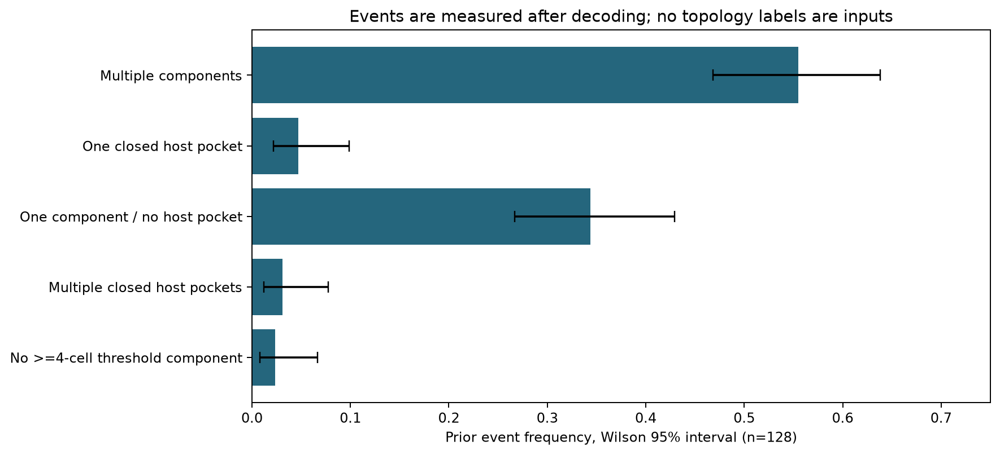

P1先验图库与材料运动
仅材料侧构造。没有散射观测、Maxwell重建、Top-K后验或新物理多解。
固定前六份先验材料

Re epsilon_r、损耗和混合分数共用色标；x/y按原mesh顺序显示。
PDF先验推前事件频率

128个calibration样本，Wilson95%区间。阈值.5、foreground4连通、host8连通、最小4cells。不是后验质量，也不为展示图赋单点概率。
PDF实际材料距离与有限运动

native只有2/12优化正常收敛，其余迭代上限；不把Dg rank下降当作Maxwell nullspace。
PDF